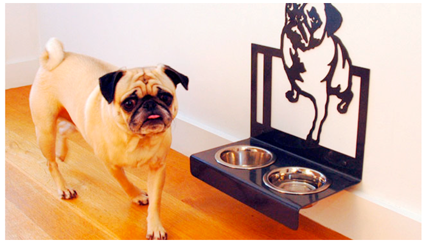

Как правильно кормить собаку?
Завели собаку? Верное решение, собака – надежный друг, преданный соратник, весёлый сосед и партнер по прогулкам. Уже распределили рацион? Кормить пса только мясом или переводить его на вегетарианскую пищу – неверное решение. Диета четвероногого любимца должна быть тщательно продумана, разработана и сбалансирована. Без должной порции витаминов и полезных минералов замедлится рост, начнутся болезни. Долго протянет человек, если его кормить только колбасой или консервами? Тогда с чего Вы взяли, что собачий организм на это способен?
Оптимальный рацион для лучшего друга человека
Будучи настоящим экспертом в области знания звериных привычек и потребностей, ветеринарная клиника «Айболит» с радостью делится советами по составлению собачьего рациона. Начнем с времени кормежки. Регулярность кормления – обязательна, как и процент содержания в рационе мяса, который не должен быть ниже 40%. «Молодежь», как правило, получает больше пищи, дабы не допускать недоразвития. Перед кормлением старайтесь выгулять собаку, пусть, как говорится, «нагуляет» аппетит. Важно набраться воли и не нагружать желудок питомца лакомствами между основной кормежкой. Никакой пользы от этого не будет.
Что должно входить в состав пищи?
Вещества, необходимые для развития и роста собаки, ничем не отличаются от тех, что полезны человеку. Чистая вода, белки с содержанием азота, углеводы и жиры, наиболее полезные для «братьев меньших» витамины А и D. За подробностями и помощью обращайтесь к диетологам «Baskerville». Эксперты оперативно составят выверенную и сбалансированную диету Вашему питомцу, помогающую развиваться и расти.
